FASHION / BEAUTY
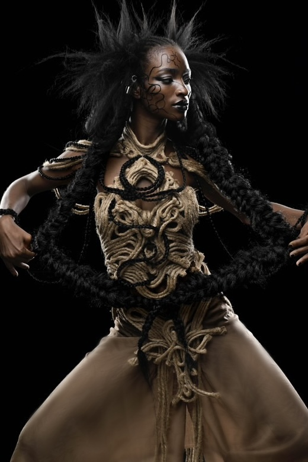
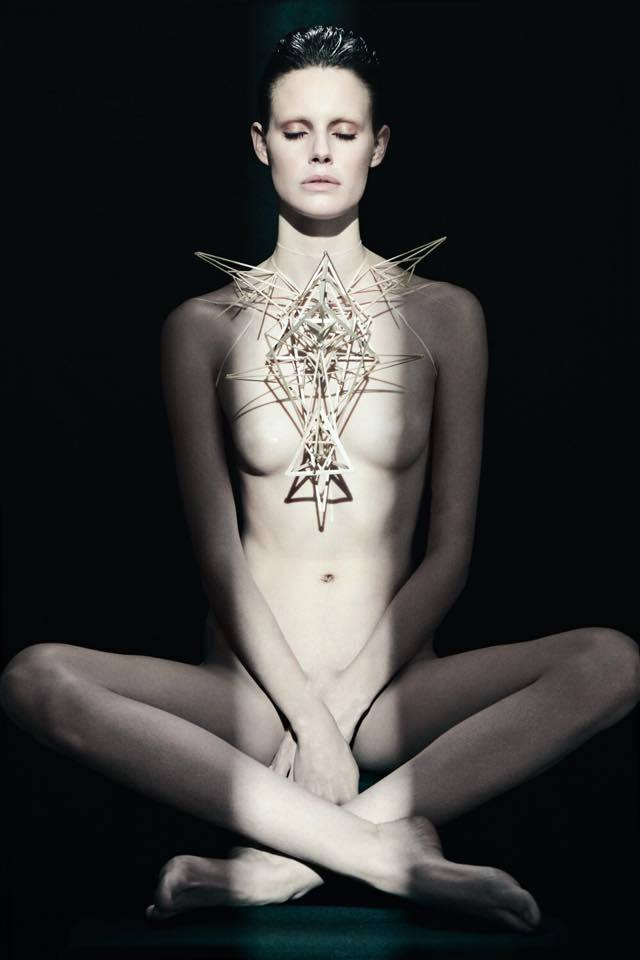
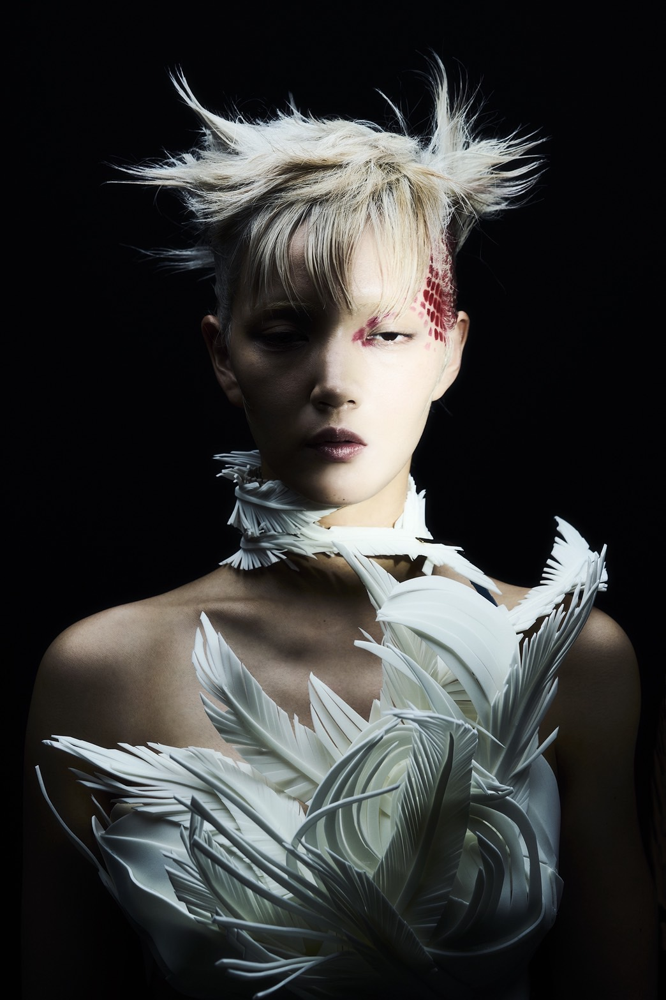
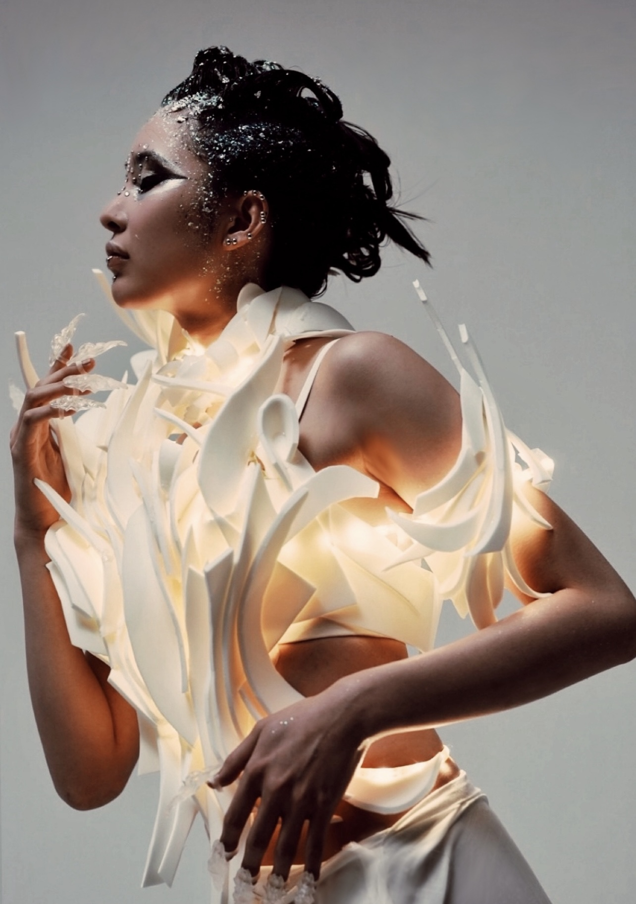
VEOIR MAGAZINE (NY / Paris) – Feature
コンセプトは「影を纏う」。
ボディペイントをハイファッションへ昇華させ、身体を彩ることの本質を問う。
肌に落ちる幾何学の影と 肉体の有機的な稜線の対比。
色彩を排したミニマリズムが、身体そのものの造形美を浮き彫りにする。
Concept: "To Wear the Shadow."
Elevating body paint to the realm of high fashion,
questioning the essence of adorning the human form.
Minimalism through the interplay of shadows and the body's natural contours,stripped of all color.
Revealing the flesh itself as the ultimate sculptural beauty.
PHOTOGRAPHY: JULIA COMITA
CONCEPT & SCULPTURE: ISHIKAWA SAKI
CREATIVE DIRECTION: LISA JARVIS
HAIR: YUHI KIM
MODEL: EHREN DORSEY @NY MODELS
PHOTOGRAPHY ASSISTANT: IAN JONES
PRODUCTION: NUMI PRASARN
CONCEPT & SCULPTURE: ISHIKAWA SAKI
CREATIVE DIRECTION: LISA JARVIS
HAIR: YUHI KIM
MODEL: EHREN DORSEY @NY MODELS
PHOTOGRAPHY ASSISTANT: IAN JONES
PRODUCTION: NUMI PRASARN
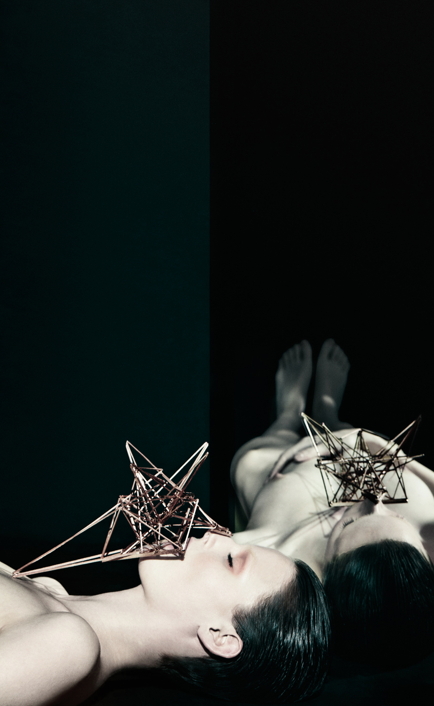
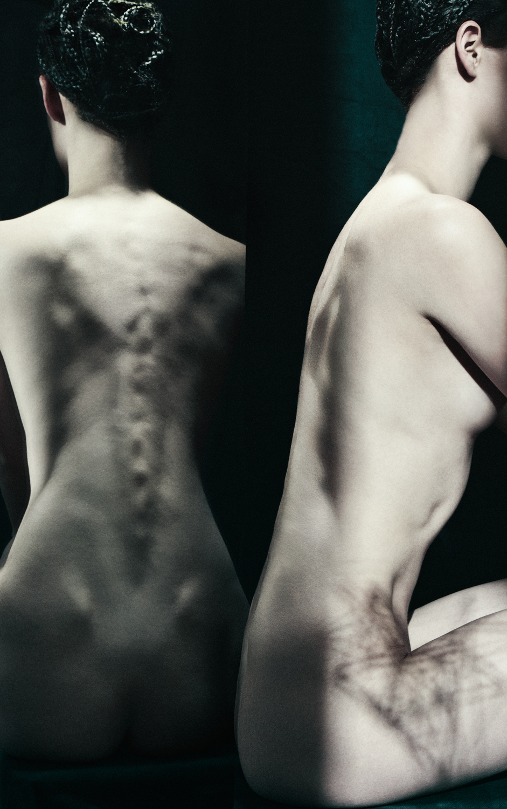
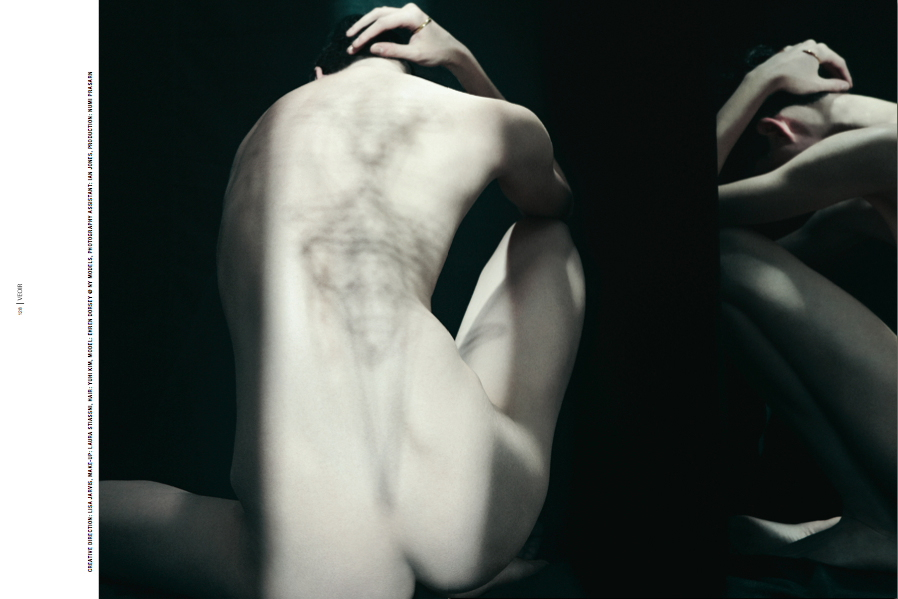
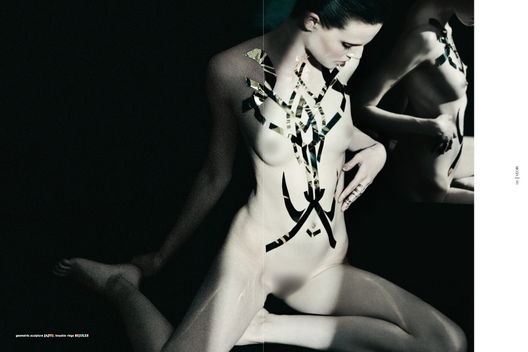
ICD 100th Anniversary World Congress 2025
Hair Show – Hamburg, Germany
ICD 100周年記念 国際ヘアショー in ドイツ大会
日本代表チーム：木下裕章氏の衣装を担当。

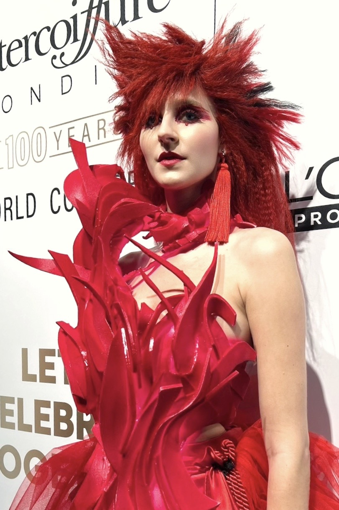
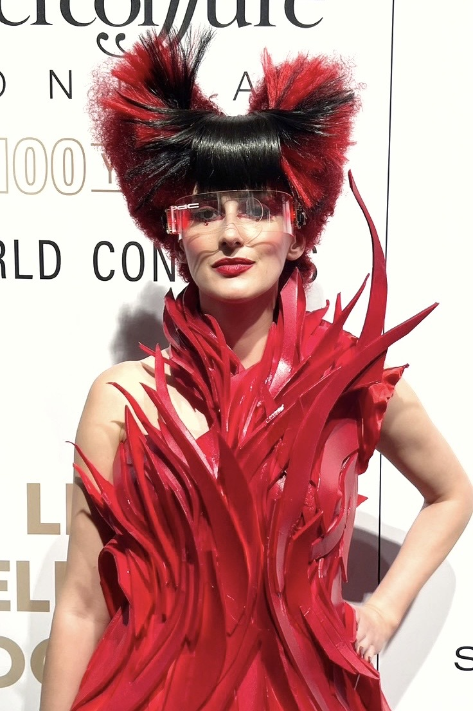
HAIR: HIROAKI KINOSHITA
COSTUMES: ISHIKAWA SAKI
COSTUME FINISHING: YUKINO IKEDA
COSTUMES: ISHIKAWA SAKI
COSTUME FINISHING: YUKINO IKEDA
ICARUS
TOKYO FASHION EDGE vol.72 掲載
HAIR: KENTA UENISHI
PHOTOGRAPHY: YUSUKE MATSUYAMA
MAKEUP: DAICHI MISAKI
COSTUME DESIGN & VIDEO ART: ISHIKAWA SAKI
PHOTOGRAPHY: YUSUKE MATSUYAMA
MAKEUP: DAICHI MISAKI
COSTUME DESIGN & VIDEO ART: ISHIKAWA SAKI
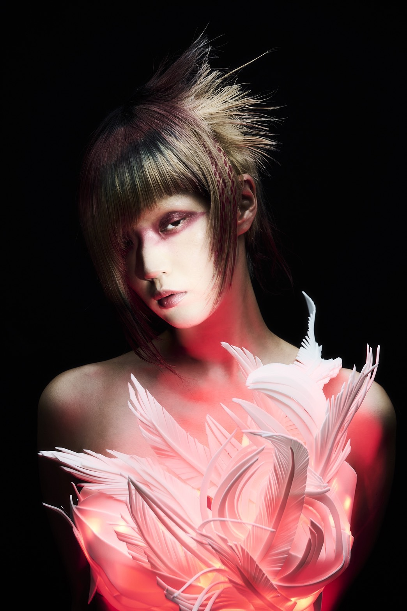